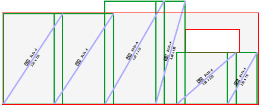

Verlegung im Rechteck [VerRec]
Verlegung von Matten desselben Formates in regelmäßigen, geradlinig berandeten Bereichen.

Verlegung im Polygon [VerPol]
Verlegung von Matten desselben Formates in unregelmäßigen, polygonalen Bereichen.

Einzelverlegung mit individuellen Mattenformaten [VerEin]
Für kleine Flächen, die mit Matten verschiedener Maße gefüllt werden müssen.
Einzeln verlegte Matten werden grundsätzlich als Rechtecke behandelt und verwaltet. Sie sind nicht gruppiert und können daher nicht als Gruppe editiert werden.
